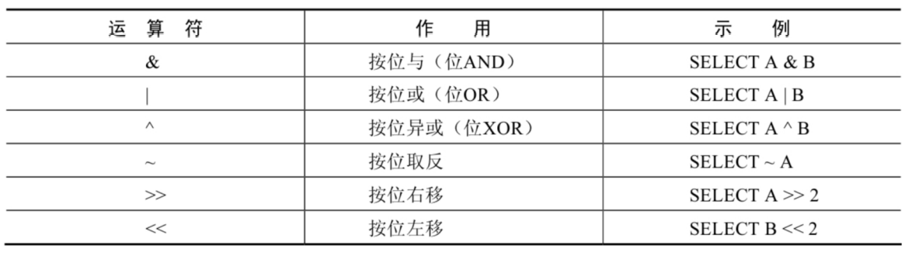

1. 算术运算符
算术运算符主要用于数学运算，其可以连接运算符前后的两个数值或表达式，对数值或表达式进行加 （+）、减（-）、乘（*）、除（/）和取模（%）运算。
1．加法与减法运算符
mysql> SELECT 100, 100 + 0, 100 - 0, 100 + 50, 100 + 50 -30, 100 + 35.5, 100 - 35.5
FROM dual;
+-----+---------+---------+----------+--------------+------------+------------+
| 100 | 100 + 0 | 100 - 0 | 100 + 50 | 100 + 50 -30 | 100 + 35.5 | 100 - 35.5 |
+-----+---------+---------+----------+--------------+------------+------------+
| 100 | 100 | 100 | 150 | 120 | 135.5 | 64.5 |
+-----+---------+---------+----------+--------------+------------+------------+
1 row in set (0.00 sec)
- 一个整数类型的值对整数进行加法和减法操作，结果还是一个整数；
- 一个整数类型的值对浮点数进行加法和减法操作，结果是一个浮点数；
- 加法和减法的优先级相同，进行先加后减操作与进行先减后加操作的结果是一样的；
- 在Java中，
+的左右两边如果有字符串，那么表示字符串的拼接。但是在MySQL中+只表示数值相加。如果遇到非数值类型，先尝试转成数值，如果转失败，就按0计算。（补充：MySQL 中字符串拼接要使用字符串函数CONCAT()实现）
2．乘法与除法运算符
mysql> SELECT 100, 100 * 1, 100 * 1.0, 100 / 1.0, 100 / 2,100 + 2 * 5 / 2,100 /3, 100
DIV 0 FROM dual;
+-----+---------+-----------+-----------+---------+-----------------+---------+-------
----+
| 100 | 100 * 1 | 100 * 1.0 | 100 / 1.0 | 100 / 2 | 100 + 2 * 5 / 2 | 100 /3 | 100
DIV 0 |
+-----+---------+-----------+-----------+---------+-----------------+---------+-------
----+
| 100 | 100 | 100.0 | 100.0000 | 50.0000 | 105.0000 | 33.3333 |
NULL |
+-----+---------+-----------+-----------+---------+-----------------+---------+-------
----+
1 row in set (0.00 sec)
#计算出员工的年基本工资
SELECT employee_id,salary,salary * 12 annual_sal
FROM employees;
由运算结果可以得出如下结论：
- 一个数乘以整数1和除以整数1后仍得原数；
- 一个数乘以浮点数1和除以浮点数1后变成浮点数，数值与原数相等；
- 一个数除以整数后，不管是否能除尽，结果都为一个浮点数；
- 一个数除以另一个数，除不尽时，结果为一个浮点数，并保留到小数点后4位；
- 乘法和除法的优先级相同，进行先乘后除操作与先除后乘操作，得出的结果相同。
- 在数学运算中，0不能用作除数，在MySQL中，一个数除以0为NULL。
3．求模（求余）运算符
将t22表中的字段i对3和5进行求模（求余）运算。
mysql> SELECT 12 % 3, 12 MOD 5 FROM dual;
+--------+----------+
| 12 % 3 | 12 MOD 5 |
+--------+----------+
| 0 | 2 |
+--------+----------+
1 row in set (0.00 sec)
# 筛选出employee_id是偶数的员工
SELECT * FROM employees
WHERE employee_id MOD 2 = 0;
可以看到，100对3求模后的结果为3，对5求模后的结果为0。
2. 比较运算符
比较运算符用来对表达式左边的操作数和右边的操作数进行比较，比较的结果为真则返回1，比较的结果 为假则返回0，其他情况则返回NULL。
比较运算符经常被用来作为SELECT查询语句的条件来使用，返回符合条件的结果记录。
1. 等号运算符
等号运算符（=）判断等号两边的值、字符串或表达式是否相等，如果相等则返回1，不相等则返回 0。
在使用等号运算符时，遵循如下规则：
- 如果等号两边的值、字符串或表达式都为字符串，则MySQL会按照字符串进行比较，其比较的 是每个字符串中字符的ANSI编码是否相等。
- 如果等号两边的值都是整数，则MySQL会按照整数来比较两个值的大小。
- 如果等号两边的值一个是整数，另一个是字符串，则MySQL会将字符串转化为数字进行比较。
- 如果等号两边的值、字符串或表达式中有一个为NULL，则比较结果为NULL。
对比：SQL中赋值符号使用 : =
mysql> SELECT 1 = 1, 1 = '1', 1 = 0, 'a' = 'a', (5 + 3) = (2 + 6), '' = NULL , NULL =
NULL;
+-------+---------+-------+-----------+-------------------+-----------+-------------+
| 1 = 1 | 1 = '1' | 1 = 0 | 'a' = 'a' | (5 + 3) = (2 + 6) | '' = NULL | NULL = NULL |
+-------+---------+-------+-----------+-------------------+-----------+-------------+
| 1 | 1 | 0 | 1 | 1 | NULL | NULL |
+-------+---------+-------+-----------+-------------------+-----------+-------------+
1 row in set (0.00 sec)
#查询salary=10000，注意在Java中比较是==
SELECT employee_id,salary FROM employees WHERE salary = 10000;
2. 安全等于运算符
安全等于运算符（<=>）与等于运算符（=）的作用是相似的， 唯一的区别 是‘<=>’可 以用来对NULL进行判断。
在两个操作数均为NULL时，其返回值为1，而不为NULL；
当一个操作数为NULL 时，其返回值为0，而不为NULL。
安全等于运算符就是为NULL而生
mysql> SELECT 1 <=> '1', 1 <=> 0, 'a' <=> 'a', (5 + 3) <=> (2 + 6), '' <=> NULL,NULL
<=> NULL FROM dual;
+-----------+---------+-------------+---------------------+-------------+---------------+
| 1 <=> '1' | 1 <=> 0 | 'a' <=> 'a' | (5 + 3) <=> (2 + 6) | '' <=> NULL | NULL <=>NULL |
+-----------+---------+-------------+---------------------+-------------+---------------+
| 1 | 0 | 1 | 1 | 0 | 1 |
+-----------+---------+-------------+---------------------+-------------+---------------+
1 row in set (0.00 sec)
3. 不等于运算符
不等于运算符（<>和!=）用于判断两边的数字、字符串或者表达式的值是否不相等， 如果不相等则返回1，相等则返回0。不等于运算符不能判断NULL值。如果两边的值有任意一个为NULL， 或两边都为NULL，则结果为NULL。 SQL语句示例如下：
mysql> SELECT 1 <> 1, 1 != 2, 'a' != 'b', (3+4) <> (2+6), 'a' != NULL, NULL <> NULL;
+--------+--------+------------+----------------+-------------+--------------+
| 1 <> 1 | 1 != 2 | 'a' != 'b' | (3+4) <> (2+6) | 'a' != NULL | NULL <> NULL |
+--------+--------+------------+----------------+-------------+--------------+
| 0 | 1 | 1 | 1 | NULL | NULL |
+--------+--------+------------+----------------+-------------+--------------+
1 row in set (0.00 sec)
4. 空运算符
空运算符（IS NULL或者ISNULL）判断一个值是否为NULL，如果为NULL则返回1，否则返回 0。 SQL语句示例如下：
mysql> SELECT NULL IS NULL, ISNULL(NULL), ISNULL('a'), 1 IS NULL;
+--------------+--------------+-------------+-----------+
| NULL IS NULL | ISNULL(NULL) | ISNULL('a') | 1 IS NULL |
+--------------+--------------+-------------+-----------+
| 1 | 1 | 0 | 0 |
+--------------+--------------+-------------+-----------+
1 row in set (0.00 sec)
#查询commission_pct等于NULL。比较如下的四种写法
SELECT employee_id,commission_pct FROM employees WHERE commission_pct IS NULL;
SELECT employee_id,commission_pct FROM employees WHERE commission_pct <=> NULL;
SELECT employee_id,commission_pct FROM employees WHERE ISNULL(commission_pct);
SELECT employee_id,commission_pct FROM employees WHERE commission_pct = NULL;
SELECT last_name, manager_id
FROM employees
WHERE manager_id IS NULL;
5. 非空运算符
非空运算符（IS NOT NULL）判断一个值是否不为NULL，如果不为NULL则返回1，否则返 回0。 SQL语句示例如下：
mysql> SELECT NULL IS NOT NULL, 'a' IS NOT NULL, 1 IS NOT NULL;
+------------------+-----------------+---------------+
| NULL IS NOT NULL | 'a' IS NOT NULL | 1 IS NOT NULL |
+------------------+-----------------+---------------+
| 0 | 1 | 1 |
+------------------+-----------------+---------------+
1 row in set (0.01 sec)
6. 最小值运算符
语法格式为：LEAST(值1，值2，…，值n)。
其中，“值n”表示参数列表中有n个值。在有 两个或多个参数的情况下，返回最小值。
mysql> SELECT LEAST (1,0,2), LEAST('b','a','c'), LEAST(1,NULL,2);
+---------------+--------------------+-----------------+
| LEAST (1,0,2) | LEAST('b','a','c') | LEAST(1,NULL,2) |
+---------------+--------------------+-----------------+
| 0 | a | NULL |
+---------------+--------------------+-----------------+
1 row in set (0.00 sec)
由结果可以看到，当参数是整数或者浮点数时，LEAST将返回其中最小的值；当参数为字符串时，返回字 母表中顺序最靠前的字符；当比较值列表中有NULL时，不能判断大小，返回值为NULL。
7. 最大值运算符
语法格式为：GREATEST(值1，值2，…，值n)。
其中，n表示参数列表中有n个值。当有 两个或多个参数时，返回值为最大值。假如任意一个自变量为NULL，则GREATEST()的返回值为NULL。
mysql> SELECT GREATEST(1,0,2), GREATEST('b','a','c'), GREATEST(1,NULL,2);
+-----------------+-----------------------+--------------------+
| GREATEST(1,0,2) | GREATEST('b','a','c') | GREATEST(1,NULL,2) |
+-----------------+-----------------------+--------------------+
| 2 | c | NULL |
+-----------------+-----------------------+--------------------+
1 row in set (0.00 sec)
由结果可以看到，当参数中是整数或者浮点数时，GREATEST将返回其中最大的值；当参数为字符串时， 返回字母表中顺序最靠后的字符；当比较值列表中有NULL时，不能判断大小，返回值为NULL。
8. BETWEEN AND运算符
BETWEEN运算符使用的格式通常为SELECT D FROM TABLE WHERE C BETWEEN A AND B，此时，当C大于或等于A，并且C小于或等于B时，结果为1，否则结果为0。【包含边界】mysql> SELECT 1 BETWEEN 0 AND 1, 10 BETWEEN 11 AND 12, 'b' BETWEEN 'a' AND 'c';
+-------------------+----------------------+-------------------------+
| 1 BETWEEN 0 AND 1 | 10 BETWEEN 11 AND 12 | 'b' BETWEEN 'a' AND 'c' |
+-------------------+----------------------+-------------------------+
| 1 | 0 | 1 |
+-------------------+----------------------+-------------------------+
1 row in set (0.00 sec)
SELECT last_name, salary
FROM employees
WHERE salary BETWEEN 2500 AND 3500;
9. IN运算符
IN运算符用于判断给定的值是否是IN列表中的一个值，如果是则返回1，否则返回0。如果给定的值为NULL，或者IN列表中存在NULL，则结果为NULL。
mysql> SELECT 'a' IN ('a','b','c'), 1 IN (2,3), NULL IN ('a','b'), 'a' IN ('a', NULL);
+----------------------+------------+-------------------+--------------------+
| 'a' IN ('a','b','c') | 1 IN (2,3) | NULL IN ('a','b') | 'a' IN ('a', NULL) |
+----------------------+------------+-------------------+--------------------+
| 1 | 0 | NULL | 1 |
+----------------------+------------+-------------------+--------------------+
1 row in set (0.00 sec)
SELECT employee_id, last_name, salary, manager_id
FROM employees
WHERE manager_id IN (100, 101, 201);
10. NOT IN运算符
NOT IN运算符用于判断给定的值是否不是IN列表中的一个值，如果不是IN列表中的一 个值，则返回1，否则返回0。
mysql> SELECT 'a' NOT IN ('a','b','c'), 1 NOT IN (2,3);
+--------------------------+----------------+
| 'a' NOT IN ('a','b','c') | 1 NOT IN (2,3) |
+--------------------------+----------------+
| 0 | 1 |
+--------------------------+----------------+
1 row in set (0.00 sec)
11. LIKE运算符
LIKE运算符主要用来匹配字符串，通常用于模糊匹配，如果满足条件则返回1，否则返回 0。如果给定的值或者匹配条件为NULL，则返回结果为NULL。
LIKE运算符通常使用如下通配符：
%：匹配0个或多个字符。
_：只能匹配一个字符。
mysql> SELECT NULL LIKE 'abc', 'abc' LIKE NULL;
+-----------------+-----------------+
| NULL LIKE 'abc' | 'abc' LIKE NULL |
+-----------------+-----------------+
| NULL | NULL |
+-----------------+-----------------+
1 row in set (0.00 sec)
SELECT first_name
FROM employees
WHERE first_name LIKE 'S%';
SELECT last_name
FROM employees
WHERE last_name LIKE '_o%';
ESCAPE
回避特殊符号的：使用转义符。例如：将[%]转为[$%]、[]转为[$]，然后再加上[ESCAPE‘$’]即可。
举例：要求第二个字符为_
SELECT job_id
FROM jobs
WHERE job_id LIKE "IT\_%";
如果使用\表示转义，要省略ESCAPE。MySQL中如果不用\，则要加上ESCAPE。
SELECT job_id
FROM jobs
WHERE job_id LIKE 'IT$_%' escape '$';
12. REGEXP运算符
REGEXP运算符用来匹配字符串，语法格式为： expr REGEXP 匹配条件 。如果expr满足匹配条件，返回 1；如果不满足，则返回0。若expr或匹配条件任意一个为NULL，则结果为NULL。
（1）‘^’匹配以该字符后面的字符开头的字符串。
（2）‘$’匹配以该字符前面的字符结尾的字符串。
（3）‘.’匹配任何一个单字符。
（4）“[...]”匹配在方括号内的任何字符。例如，“[abc]”匹配“a”或“b”或“c”。为了命名字符的范围，使用一
个‘-’。“[a-z]”匹配任何字母，而“[0-9]”匹配任何数字。
（5）‘*’匹配零个或多个在它前面的字符。例如，“x*”匹配任何数量的‘x’字符，“[0-9]*”匹配任何数量的数字，
而“*”匹配任何数量的任何字符。
3.逻辑运算符
逻辑运算符主要用来判断表达式的真假，在MySQL中，逻辑运算符的返回结果为1、0或者NULL。
MySQL中支持4种逻辑运算符如下：
1. 逻辑非运算符
逻辑非（NOT或!）运算符表示当给定的值为0时返回1；当给定的值为非0值时返回0； 当给定的值为NULL时，返回NULL。
mysql> SELECT NOT 1, NOT 0, NOT(1+1), NOT !1, NOT NULL;
+-------+-------+----------+--------+----------+
| NOT 1 | NOT 0 | NOT(1+1) | NOT !1 | NOT NULL |
+-------+-------+----------+--------+----------+
| 0 | 1 | 0 | 1 | NULL |
+-------+-------+----------+--------+----------+
1 row in set, 1 warning (0.00 sec)
SELECT last_name, job_id
FROM employees
WHERE job_id NOT IN ('IT_PROG', 'ST_CLERK', 'SA_REP');
2. 逻辑与运算符
逻辑与（AND或&&）运算符是当给定的所有值均为非0值，并且都不为NULL时，返回 1；当给定的一个值或者多个值为0时则返回0；否则返回NULL。
mysql> SELECT 1 AND -1, 0 AND 1, 0 AND NULL, 1 AND NULL;
+----------+---------+------------+------------+
| 1 AND -1 | 0 AND 1 | 0 AND NULL | 1 AND NULL |
+----------+---------+------------+------------+
| 1 | 0 | 0 | NULL |
+----------+---------+------------+------------+
1 row in set (0.00 sec)
SELECT employee_id, last_name, job_id, salary
FROM employees
WHERE salary >=10000
AND job_id LIKE '%MAN%';
3. 逻辑或运算符
| 逻辑或（OR或 | ）运算符是当给定的值都不为NULL，并且任何一个值为非0值时，则返 回1，否则返回0；当一个值为NULL，并且另一个值为非0值时，返回1，否则返回NULL；当两个值都为 NULL时，返回NULL。 |
mysql> SELECT 1 OR -1, 1 OR 0, 1 OR NULL, 0 || NULL, NULL || NULL;
+---------+--------+-----------+-----------+--------------+
| 1 OR -1 | 1 OR 0 | 1 OR NULL | 0 || NULL | NULL || NULL |
+---------+--------+-----------+-----------+--------------+
| 1 | 1 | 1 | NULL | NULL |
+---------+--------+-----------+-----------+--------------+
1 row in set, 2 warnings (0.00 sec)
#查询基本薪资不在9000-12000之间的员工编号和基本薪资
SELECT employee_id,salary FROM employees
WHERE NOT (salary >= 9000 AND salary <= 12000);
SELECT employee_id,salary FROM employees
WHERE salary <9000 OR salary > 12000;
SELECT employee_id,salary FROM employees
WHERE salary NOT BETWEEN 9000 AND 12000;
SELECT employee_id, last_name, job_id, salary
FROM employees
WHERE salary >= 10000
OR job_id LIKE '%MAN%';
注意： OR可以和AND一起使用，但是在使用时要注意两者的优先级，由于AND的优先级高于OR，因此先 对AND两边的操作数进行操作，再与OR中的操作数结合。
4. 逻辑异或运算符
逻辑异或（XOR）运算符是当给定的值中任意一个值为NULL时，则返回NULL；如果 两个非NULL的值都是0或者都不等于0时，则返回0；如果一个值为0，另一个值不为0时，则返回1。
mysql> SELECT 1 XOR -1, 1 XOR 0, 0 XOR 0, 1 XOR NULL, 1 XOR 1 XOR 1, 0 XOR 0 XOR 0;
+----------+---------+---------+------------+---------------+---------------+
| 1 XOR -1 | 1 XOR 0 | 0 XOR 0 | 1 XOR NULL | 1 XOR 1 XOR 1 | 0 XOR 0 XOR 0 |
+----------+---------+---------+------------+---------------+---------------+
| 0 | 1 | 0 | NULL | 1 | 0 |
+----------+---------+---------+------------+---------------+---------------+
1 row in set (0.00 sec)
select last_name,department_id,salary
from employees
where department_id in (10,20) XOR salary > 8000;
4. 位运算符
位运算符是在二进制数上进行计算的运算符。位运算符会先将操作数变成二进制数，然后进行位运算， 最后将计算结果从二进制变回十进制数。
MySQL支持的位运算符如下：

1．按位与运算符
按位与（&）运算符将给定值对应的二进制数逐位进行逻辑与运算。当给定值对应的二 进制位的数值都为1时，则该位返回1，否则返回0。
mysql> SELECT 1 & 10, 20 & 30;
+--------+---------+
| 1 & 10 | 20 & 30 |
+--------+---------+
| 0 | 20 |
+--------+---------+
1 row in set (0.00 sec)
1的二进制数为0001，10的二进制数为1010，所以1 & 10的结果为0000，对应的十进制数为0。20的二进制 数为10100，30的二进制数为11110，所以20 & 30的结果为10100，对应的十进制数为20。
2. 按位或运算符
按位或（|）运算符将给定的值对应的二进制数逐位进行逻辑或运算。当给定值对应的 二进制位的数值有一个或两个为1时，则该位返回1，否则返回0。mysql> SELECT 1 | 10, 20 | 30;
+--------+---------+
| 1 | 10 | 20 | 30 |
+--------+---------+
| 11 | 30 |
+--------+---------+
1 row in set (0.00 sec
| 1的二进制数为0001，10的二进制数为1010，所以1 | 10的结果为1011，对应的十进制数为11。20的二进 制数为10100，30的二进制数为11110，所以20 | 30的结果为11110，对应的十进制数为30。 |
3. 按位异或运算符
按位异或（^）运算符将给定的值对应的二进制数逐位进行逻辑异或运算。当给定值 对应的二进制位的数值不同时，则该位返回1，否则返回0。
mysql> SELECT 1 ^ 10, 20 ^ 30;
+--------+---------+
| 1 ^ 10 | 20 ^ 30 |
+--------+---------+
| 11 | 10 |
+--------+---------+
1 row in set (0.00 sec)
1的二进制数为0001，10的二进制数为1010，所以1 ^ 10的结果为1011，对应的十进制数为11。20的二进 制数为10100，30的二进制数为11110，所以20 ^ 30的结果为01010，对应的十进制数为10。 再举例：
mysql> SELECT 12 & 5, 12 | 5,12 ^ 5 FROM DUAL;
+--------+--------+--------+
| 12 & 5 | 12 | 5 | 12 ^ 5 |
+--------+--------+--------+
| 4 | 13 | 9 |
+--------+--------+--------+
1 row in set (0.00 sec)
4. 按位取反运算符
按位取反（~）运算符将给定的值的二进制数逐位进行取反操作，即将1变为0，将0变 为1。
mysql> SELECT 10 & ~1;
+---------+
| 10 & ~1 |
+---------+
| 10 |
+---------+
1 row in set (0.00 sec)
由于按位取反（~）运算符的优先级高于按位与（&）运算符的优先级，所以10 & ~1，首先，对数字1进 行按位取反操作，结果除了最低位为0，其他位都为1，然后与10进行按位与操作，结果为10。
5. 按位右移运算符
按位右移（»）运算符将给定的值的二进制数的所有位右移指定的位数。右移指定的 位数后，右边低位的数值被移出并丢弃，左边高位空出的位置用0补齐。
mysql> SELECT 1 >> 2, 4 >> 2;
+--------+--------+
| 1 >> 2 | 4 >> 2 |
+--------+--------+
| 0 | 1 |
+--------+--------+
1 row in set (0.00 sec)
1的二进制数为0000 0001，右移2位为0000 0000，对应的十进制数为0。4的二进制数为0000 0100，右移2 位为0000 0001，对应的十进制数为1。
6. 按位左移运算符
按位左移（«）运算符将给定的值的二进制数的所有位左移指定的位数。左移指定的 位数后，左边高位的数值被移出并丢弃，右边低位空出的位置用0补齐mysql> SELECT 1 << 2, 4 << 2;
+--------+--------+
| 1 << 2 | 4 << 2 |
+--------+--------+
| 4 | 16 |
+--------+--------+
1 row in set (0.00 sec)
1的二进制数为0000 0001，左移两位为0000 0100，对应的十进制数为4。4的二进制数为0000 0100，左移 两位为0001 0000，对应的十进制数为16。
5. 练习
- 选择工资不在5000到12000的员工的姓名和工资
SELECT last_name,salary
FROM employees
WHERE salary between 5000 and 12000;
- 选择在20或50号部门工作的员工姓名和部门号
SELECT last_name ,department_id
FROM employees
WHERE department_id IN(20,50);
- 选择公司中没有管理者的员工姓名和job_id
SELECT last_name,job_id,manager_id
FROM employees
WHERE manage_id <=> NULL;
- 选择公司中有奖金的员工姓名，工资和奖金级别
SELECT last_name,salary,commission_pct
FROM employees
WHERE NOT commission_pct <=> NULL;
- 选择姓名中有字母a和k的员工姓名
SELECT last_name
FROM employees
WHERE last_name LIKE "%a%k%" OR LIKE "%k%a%";
- 选择员工姓名的第三个字母为a的员工姓名
SELECT last_name
FROM employees
WHERE last_name LIKE "__a%";
- 显示出表employees中first_name以e结尾的员工信息
SELECT first_name,last_name
FROM employees
WHERE first_name LIKE '%e';
- 显示出表employees部门编号在80-100之间的姓名、工种
SELECT last_name,job_id
FROM employees
WHERE department_id between 80 and 100;
- 显示表employees的manage_id是100,101,110的员工姓名、工资、管理者id
SELECT last_name,salary，manager_id
FROM employees
WHERE manager_id IN(100,101,110);